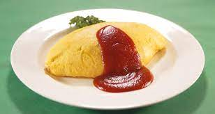

Omuraisu is a japanese meal that incorporates rice, ketchup and of course an egg.
Additionally, you can add chicken and onions to the meal, or any other vegetable for that matter.
Heres how to make it: